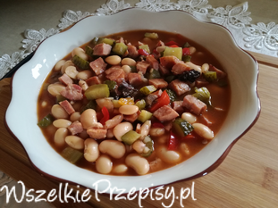
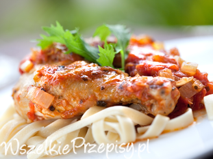
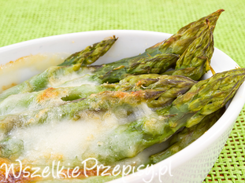
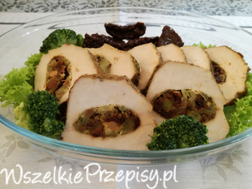
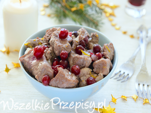

Obiady
Ocena:
Przepisy na obiad - polecamy sprawdzone przepisy na obiad. Szybki obiad po pracy? Łatwe przepisy na obiad? Wszystko mamy i polecamy! :) Mamy wszelkie przepisy! Smacznego!
Przepis na naleśniki z mięsem. Dziś polecam naleśniki z sosem węgierskim. Przepis na naleśniki z mięsem jest prosty, a danie sycące i pyszne. Polecam naleśniki na sycący obiad czy kolację!

Fasolka inaczej niż po bretońsku
Przepis na fasolkę po bretońsku. Czasami trzeb urozmaicić tradycyjne dania, dlatego postanowiłam to zrobić z fasolką, która wyszła pyszna, polecam. Oto jak zrobić fasolkę po bretońsku (no prawie :) )
Przepis na szybki obiad z kurczaka. Czasami nie mamy czasu na zrobienie obiadu, propnuje bardzo szybką potrawę, z kurczaka. Do tego nasz ulubiony sos i obiadzik pyszny. Polecam przepis!
Przepis na łatwy żurek w moim wykonaniu. Nic prostszego nie ma, a zawsze mi sie wydawało do tej pory, że żurek to koniecznie musi być na zakwasie. Jak się okazuje nie, a żurek nie zawsze jest tylko na Wielkanoc. Przepis na żurek z torebki w moim wydaniu polecam!
Naleśniki z warzywami, fasolką oraz brokułem
Przepis na naleśniki z mięsem. Oto propozycja na ciekawy obiad dla tych, co uwielbiają naleśniki :) Polecam mój przepis na naleśniki, bo naprawdę warto!
Przepis na naleśniki z mięsem. Pyszne danie, bo kurczak jest soczysty, jak również naleśniki, a to dzięki serkowi, który sprawia, że potrawa nie jest sucha. Takie naleśniki z kurczakiem to doskonały pomysł na syty obiad czy ciepłą i potężna kolację. Polecam mój przepis na naleśniki z kurczakiem!
Pierś z kurczaka z marchewką oraz porem
Sprawdzony przepis na piersi z kurczaka. Młoda marchewka jest pyszna, więc trzeba wykorzystać, proponuję fileta z kurczaka pod marchewkową pierzynką z dodatkiem sera.
Polędwiczki z kurczaka z ananasem
Przepis na polędwiczki z kurczaka z ananasem. Bardzo szybko sie robi i wygląda na stole bardzo ciekawie i ładnie jak również jest pysznym daniem.
Zapiekanka ziemniaczana z kurczakiem i z warzywami
Przepis na zapiekankę ziemniaczaną z kurczakiem i warzywami. Mięso w marynacie z dodatkiem jogurtu jest przepyszne a z warzywami, które się pokazały, nie ma nic chyba lepszego.
Młoda kapusta jest równiez pyszna, gdy się z niej zrobi zupę. Zachęcam każdego do wypróbowania przepisu bo jest naprawdę smaczna. Oto przepis jak zrobić zupę z młodej kapusty.

Kurczak cacciatore z makaronem
Prosty przepis na kurczaka w winie czyli przepis na kurczaka cacciatore. Najlepiej smakuje podawany z makaronem. Polecam przepis kuchni włoskiej, bo jest naprawdę prosty a danie pyszne :)

Szparagi zapiekane w sosie beszamelowym
Jak przygotować szparagi? Takie pytania, gdy sezon na szparagi pojawiają się non stop a ja odpowiadam tak: szparagi zapiekane w sosie beszamelowym, czyli szparagi pod beszamelem. Przepis na szparagi w takim wydaniu jest prosty, a wyniki zadziwiające, po prostu niebo w gębie! Polecam mój przepis na zapiekane szparagi pod sosem beszamelowym, na pewno nie będziecie żałować! :)

Schab nadziewany brokułem i suszonymi pomidorami
Przepis na schab pieczony, oto mój pomysł jak zrobić pyszny schab :) Danie w sam raz na niedzielny obiad, apetyczne i ładnie wyglądające.
Kurczak z warzywami w cukierku
Przepis na pierś z kurczaka. Fajna propozycja dla zachęcenia do jedzenia dzieci ale dorośli również zjedzą z apetytem. Polecam mój przepis na obiad z kurczaka!
Przepis na zupę warzywną. Zupa warzywna zawsze polecana, bo smaczna i zdrowa. Można potraktować to jako danie jednogarnkowe

Jak pokazuje przepis na polędwiczki wieprzowe w żurawinie, wieprzowina nie musi być zakazanym produktem w zdrowej kuchni. Wystarczy przygotować ją w odpowiedni sposób by zwiększyła swoją wartość odżywczą. Mała ilość dodanego tłuszczu, cebulka, żurawina i dodatek ziół to dietetyczne plusy polędwiczek wieprzowych w żurawinie.
Fileciki pod migdałową panierką
Nie ma nic prostszego, łatwego a zarazem pysznego do zrobienia jak kotlety pod migdałową pierzynką.
Tostowa zapiekanka z kurczakiem
Zapiekanka na chlebie tostowym z makaronem oraz kurczakiem, którą możemy podać na obiad lub kolacje.